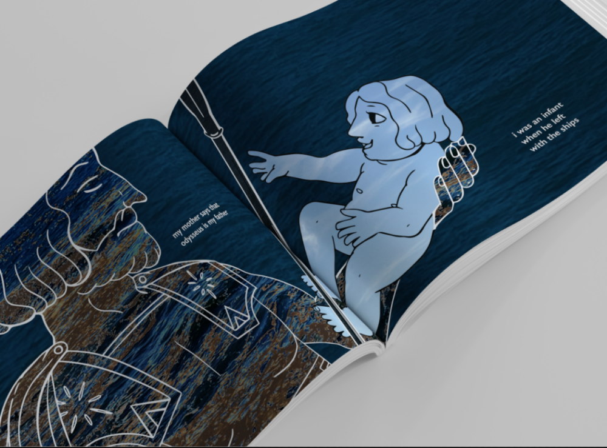
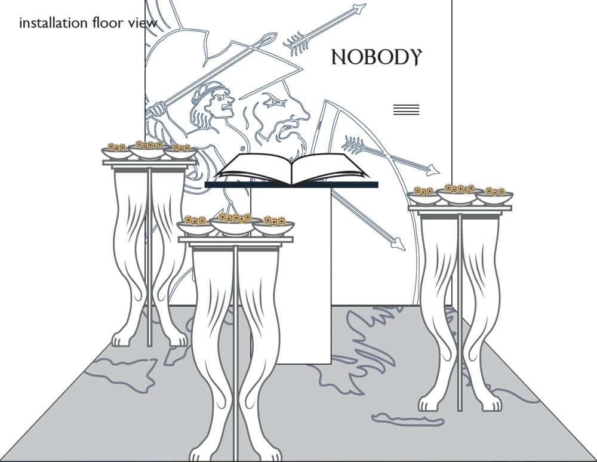

Nobody is a retelling of Homer’s Odyssey that explores how patriarchal structures shape familial relationships and examines how storytelling can be used as a tool to close emotional distance between parents and children. My interpretation of the epic poem imagines both Odysseus’ challenging homecoming and the insecurity and pain his son Telemachus experiences in his father’s 20-year absence.

I examine how paternal absence is amplified by the heavy role which both Ancient Greek societies and our own contemporary American society place upon the presence of the father of a household. By carefully selecting specific translated lines from the Odyssey in a form of blackout poetry, I highlight the emotionality, grief, and struggle which Odysseus and Telemachus canonically exhibit in the poem, bringing space to the vulnerability and weakness which can live within masculinity and heroism.
As these characters serve as broad archetypes of father and son, this project explores specific vulnerabilities children experience as the result of paternal absence, the pressures placed upon young men to be the heroes of their own stories, and how parents and children can transcend boundaries of generation, experience, and trauma.
Within the installation, an illustrated book depicts the Telemachy — Telemachus’ coming-of-age on Ithaca and his search for his father — as well as his later reunion with Odysseus. As the audience moves throughout the installation, they are invited to collect the augmented reality coins representing various adventures of Odysseus and use their personal cellular devices to further bring the story to life.
In this act, they symbolically conduct Odysseus’ onerous journey themselves, and as Telemachus comes to understand his father within their reunion in the book, so too does the audience learn of Odysseus’ trials and come to understand who he is.
